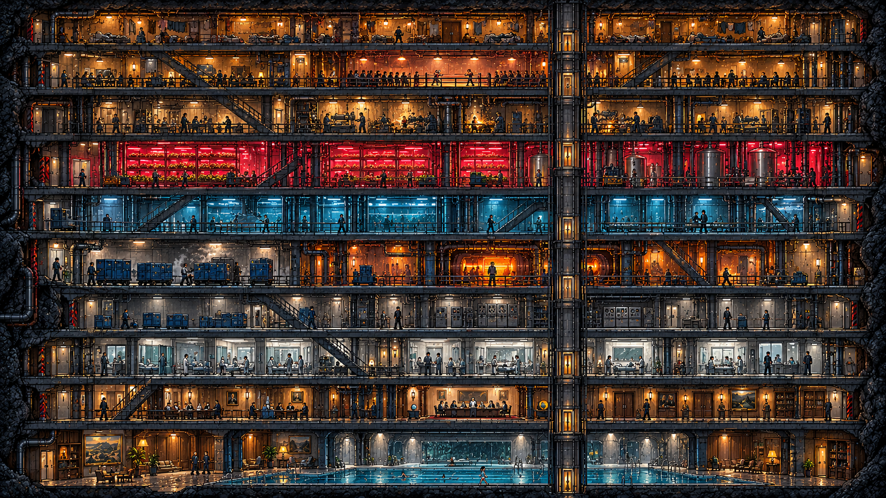

Z Y K L U S NOTHING WAS LOST
10
LEVEL TEN · THE BOTTOM
House Sarn
19 °C · Level Ten
EPISODE ONE · GAME PREVIEWYour city.
Your progress is saved in this browser.Imprint · Privacy · thezyklus.com
Your city.
Until it no longer
knows you.
Follow Lian through Episode One.
From her home to the transfer hall on Level Nine.
Your progress is saved in this browser.Imprint · Privacy · thezyklus.com
EPISODE 01 · LOCKED OUT
Your paths through the city.

The city grows with the series. New paths open after each episode airs.
LIAN SARN · EPISODE 01
What I know.
Observations are not answers.
Imprint · Privacy · thezyklus.com